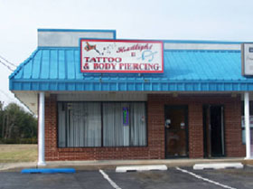
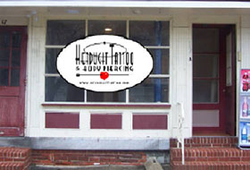

I began tattooing in 1989. Although I was mainly self-taught,I studied art and drawing at The University Of Pennsylvania from 1992-1993. I worked at The University of Pennsylvania as a Laboratory Animal Technoligist from 1985 until after I opened Headlight Tattoo in 1995. I did quite a bit of tattooing on animals. I would anesthetize and tattoo baboons and other kinds of monkeys, as well as groundhogs and such. They were identified with their USDA numbers and letters and whatnot. I got real good at doing line work that way.
Read More

